WorkMap UI 메뉴얼
WorkMap의 모든 화면을 하나씩 짚어보는 안내서입니다. 각 화면이 어디에 있고, 무엇을 보여주고, 어떤 동작을 할 수 있는지 캡처와 함께 정리했습니다. 실제 업무 흐름(에픽·스프린트 운영)은 실무 활용 메뉴얼을 참고하세요.
1로그인 · 워크스페이스 선택
WorkMap은 계정 로그인 후, 작업할 워크스페이스를 고르는 것으로 시작합니다.
로그인
이메일과 비밀번호로 로그인합니다. 계정이 없으면 관리자 초대를 통해서만 가입할 수 있습니다(자가 가입 없음). 비밀번호를 잊었으면 비밀번호를 잊으셨나요?에서 이메일 인증번호로 재설정합니다.
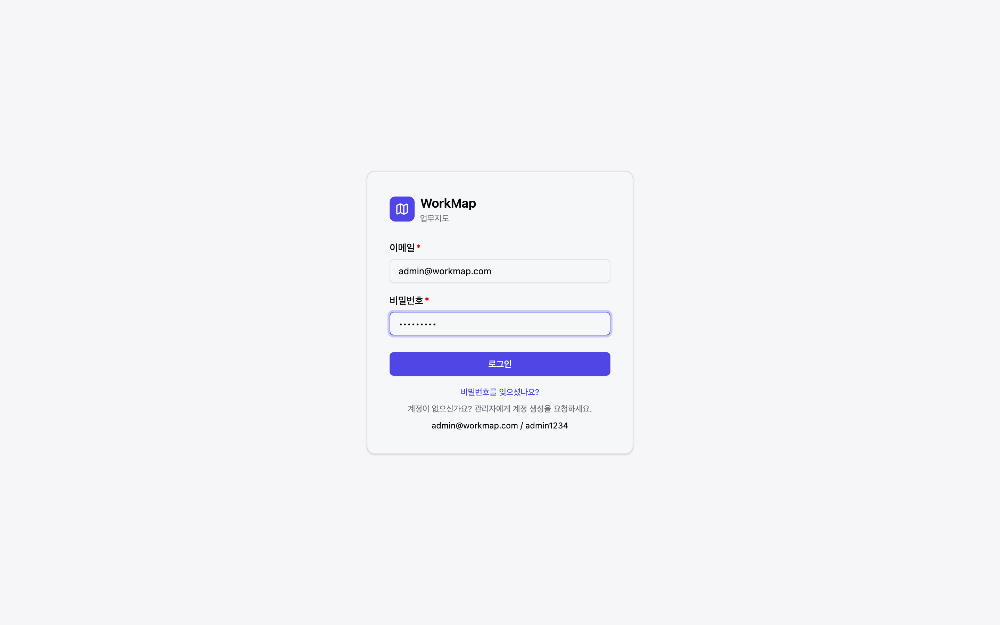
워크스페이스 선택
로그인하면 소속된 워크스페이스(WS) 목록이 나옵니다. 작업할 WS를 클릭해 진입합니다. 관리자는 [워크스페이스 만들기]·[수정]이 가능합니다.

2화면 공통 구조 — LNB · 헤더
진입 후 모든 화면은 같은 골격을 씁니다. 좌측 내비게이션(LNB)과 상단 헤더입니다.

좌측 내비게이션(LNB)
- 워크스페이스 스위처(최상단) — 현재 WS명. 클릭하면 다른 WS로 전환하거나 멤버 관리로 이동.
- 대시보드 — 회사 홈으로.
- 알림 — 받은함.
- 검색 — 전사 통합 검색.
- 워크룸 — 채팅. 펼치면 채널 목록.
- 프로젝트 — 프로젝트 목록. 펼치면 현재 WS의 프로젝트들.
- 설정 — 관리자 메뉴(Owner/Admin에게만 보임).
상단 헤더
- [+ 만들기] — 어느 화면에서든 업무를 새로 만드는 버튼(읽기 전용 권한은 숨김).
- 알림 벨 — 안 읽은 알림 수 배지. 클릭하면 최근 알림 드롭다운.
- 계정 아바타 — 클릭 시 메뉴: 알림 설정 · 화면 테마 · 비밀번호 변경 · 로그아웃.
3회사 홈 (대시보드)
로그인 후 첫 화면. 전사 차원에서 "지금 무엇을 챙겨야 하는지"를 요약합니다.
- 지표 카드 — 진행 중 · 오늘 마감 · 이번 주 마감 · 미배정 · 장기 미변경. 주의가 필요한 값은 색(amber)으로 강조.
- 현황 패널 — 막힌 업무(빨강) · 지연 업무 · 미배정 업무. 카드 클릭 시 해당 조건의 검색 결과로 이동.
4받은함 · 알림
나에게 온 배정·멘션·상태 변경·승인 요청 등을 모아 봅니다.
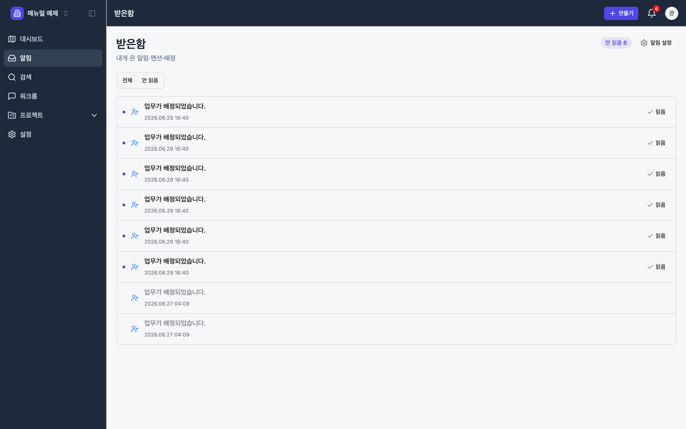
- 전체 / 안 읽음 탭으로 필터.
- 행 클릭 → 알림이 읽음 처리되고 관련 업무 상세로 이동.
- [알림 설정] → 종류별로 받을 채널(인앱/이메일/푸시)을 켜고 끔(개인 설정 참고).
5검색
제목·번호·설명·댓글을 가로질러 전사 업무를 찾습니다.

- 키워드 — 제목·업무 번호·설명·댓글까지 검색.
- 필터 — 상태 · 업무 유형 · 우선순위 · 라벨(여러 개 선택).
- 퀵필터 — 내 항목 · 최근 업데이트 · 막힌 것 · 미배정(원클릭 프리셋).
- 저장 필터 — 자주 쓰는 조건을 저장해 재사용.
6워크룸 (메시지)
워크스페이스 단위의 채팅. 채널·스레드 답글·리액션·멘션을 지원합니다.
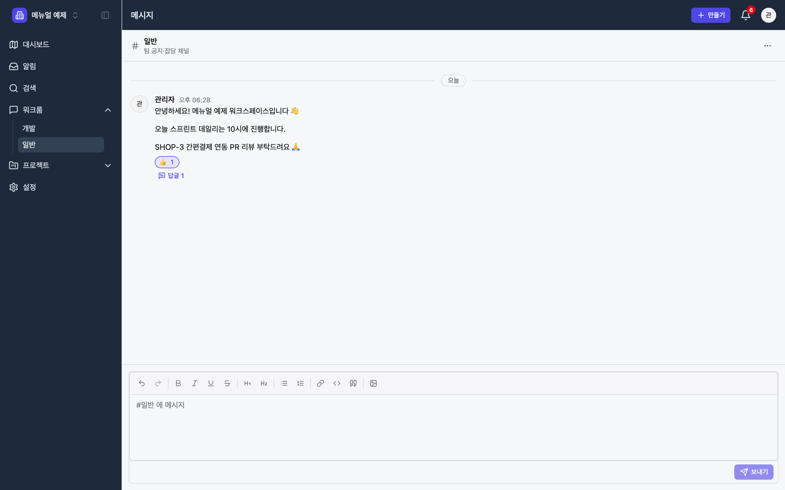
- 채널 — LNB 워크룸 아래에 채널 목록. 새 채널은 [채널 만들기]로.
- 메시지 — 서식·이미지가 들어가는 입력창. 보낸 메시지에 리액션(이모지) 추가 가능.
- 스레드 — 메시지의 답글을 클릭하면 우측 스레드 패널에서 이어 대화.
- 실시간 갱신은 폴링(약 5초). 멘션으로 특정 사람을 호출.
7프로젝트 목록 · 생성
현재 워크스페이스의 프로젝트를 카드로 보고, 새 프로젝트를 만듭니다.
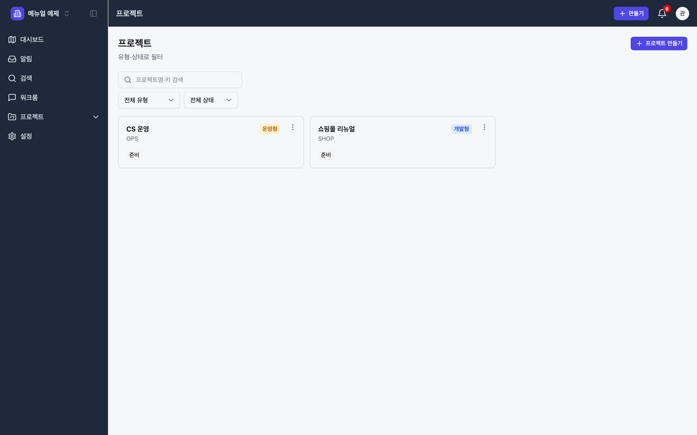
각 카드는 프로젝트명·유형 배지(개발형/운영형/계획형/기본형)·상태(준비/진행/완료/보관)·멤버를 보여줍니다.
프로젝트 만들기 (4단계 마법사)
[프로젝트 만들기]를 누르면 마법사가 열립니다.


이어 3단계(설정 확인 — 업무 유형·탭), 4단계(멤버 초대·공개/비공개)를 거쳐 완료합니다.
8프로젝트 탭 — 8종 보기
프로젝트에 들어가면 상단에 탭이 있습니다. 같은 업무 데이터를 여러 방식으로 보여줍니다. 노출되는 탭은 프로젝트 유형에 따라 다릅니다.
| 탭 | 무엇을 보여주나 | 주로 쓰는 유형 |
|---|---|---|
| 요약 | 지표·진행률·멤버 개요 | 전체 |
| 보드 | 상태별 칸반. 드래그로 상태 전이 | 전체 |
| 백로그 | 스프린트·백로그 + 드래그 정리 | 개발형 |
| 목록 | 표 형태. 필터·정렬·일괄 편집 | 운영형·기본형 |
| 타임라인 | 기간 막대(로드맵) | 개발형·계획형 |
| 캘린더 | 기한 기준 월별 | 운영형 |
| 승인 | 승인 대기/완료 결재 | 운영형 |
| 보고서 | 진행률·분포·번다운·벨로시티 | 전체 |
요약 · 보드 · 백로그


목록 · 타임라인 · 캘린더


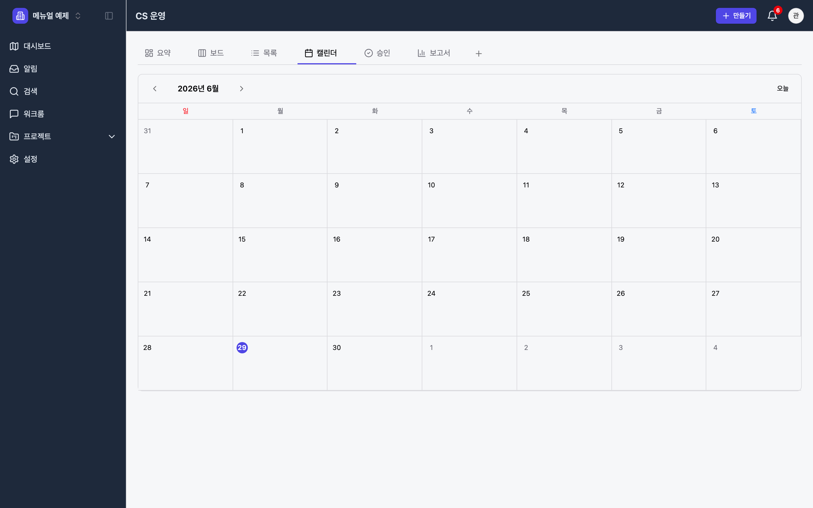
승인 · 보고서


9업무 상세 · 만들기
업무 하나를 다루는 화면과, 어디서든 업무를 만드는 모달입니다.
업무 만들기 모달
헤더 [+ 만들기]로 열립니다. 프로젝트·업무 유형·요약이 필수이고, 나머지는 선택입니다.

업무 상세
업무를 클릭하면 상세가 열립니다. 본문(유형별 섹션)·우측 세부 사항·댓글·활동 이력으로 구성됩니다.

- 본문 섹션은 유형마다 다름 — Story=인수 조건, Task=체크리스트·공수, Bug=재현/기대/실제/환경/심각도.
- 우측 세부 사항 — 담당자·우선순위·라벨·상위(Epic)·스프린트·스토리포인트·기간을 클릭 즉시 편집.
- 댓글·멘션·첨부·활동 이력 공통 제공.
10개인 설정
헤더 계정 아바타 메뉴에서 들어갑니다. 알림·테마·비밀번호 세 가지입니다.
알림 설정
알림 종류별로 받을 채널(인앱/이메일/푸시)을 켜고 끕니다.
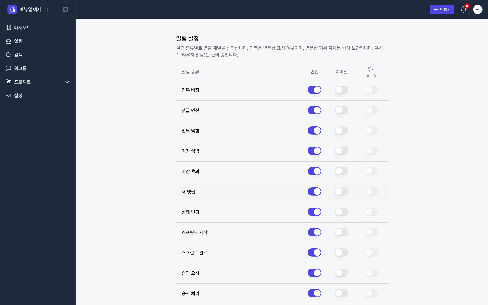
화면 테마 · 비밀번호 변경
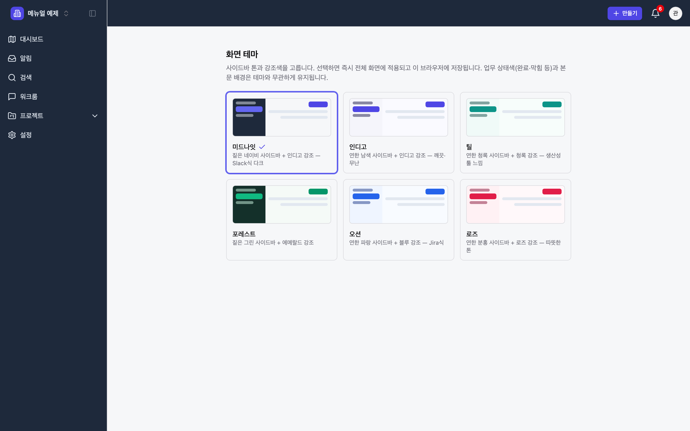
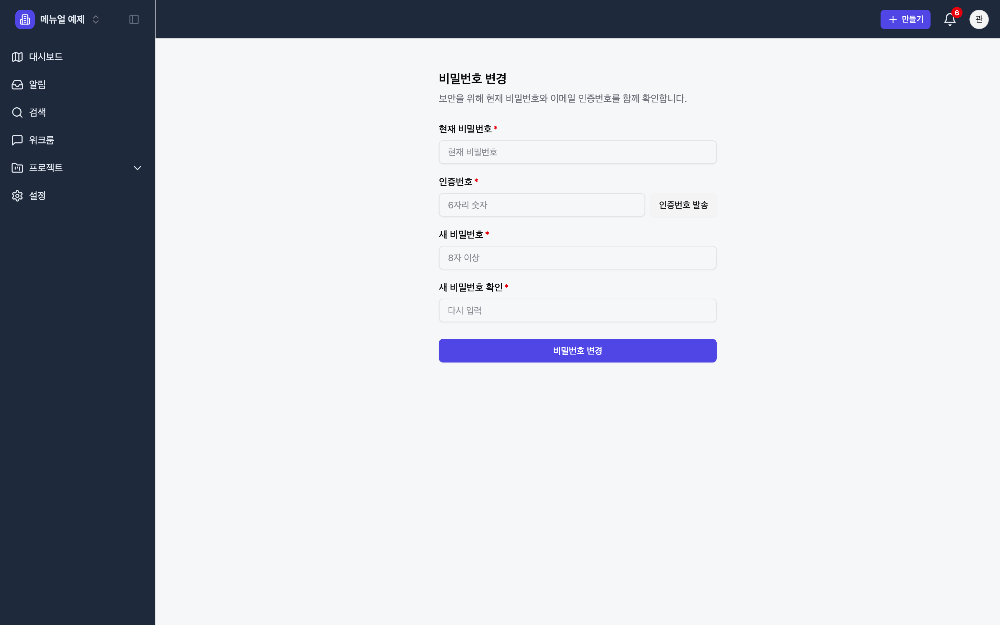
11관리자 Owner / Admin
LNB 설정으로 진입합니다. 상단 탭으로 6개 관리 영역을 전환합니다. 관리자 권한이 있어야 보입니다.
| 탭 | 관리 대상 |
|---|---|
| 측정 단위 | 업무 측정에 쓰는 단위(이름·접미사·값 유형). 시스템 단위는 보호. |
| 필드 스킴 | 유형/프로젝트별로 어떤 필드를 노출·필수로 할지. |
| 워크플로 | 상태와 전이(허용 이동) 정의. 좌측 목록 + 우측 편집. |
| 업무 유형 | 업무 유형 마스터(색·아이콘). 시스템 5종은 보호. |
| 양식 | 프로젝트별 제출 양식(폼) 만들기 + 테스트 제출. |
| 사용자 | 사용자 생성·수정·비활성화 + 이메일 초대(대기·재발송·취소). |
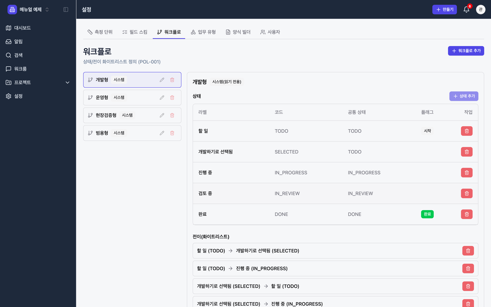
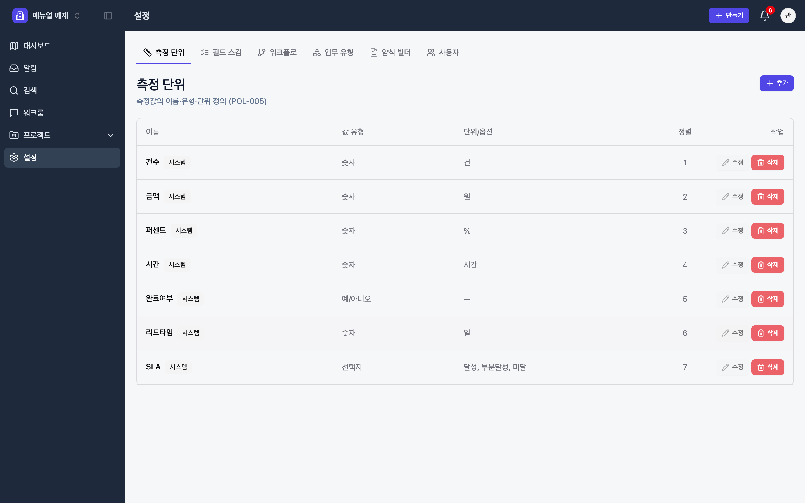
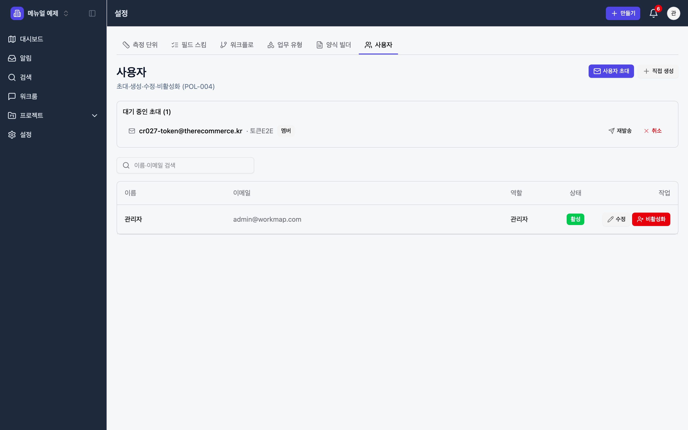
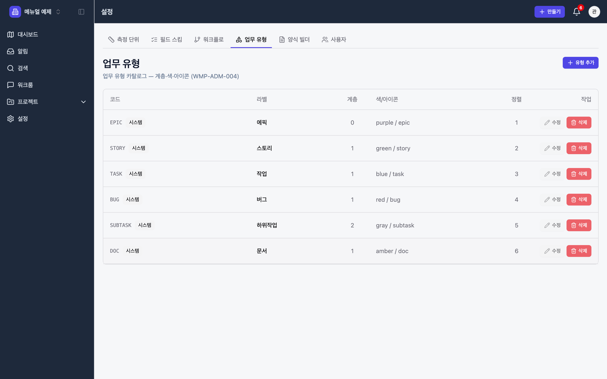
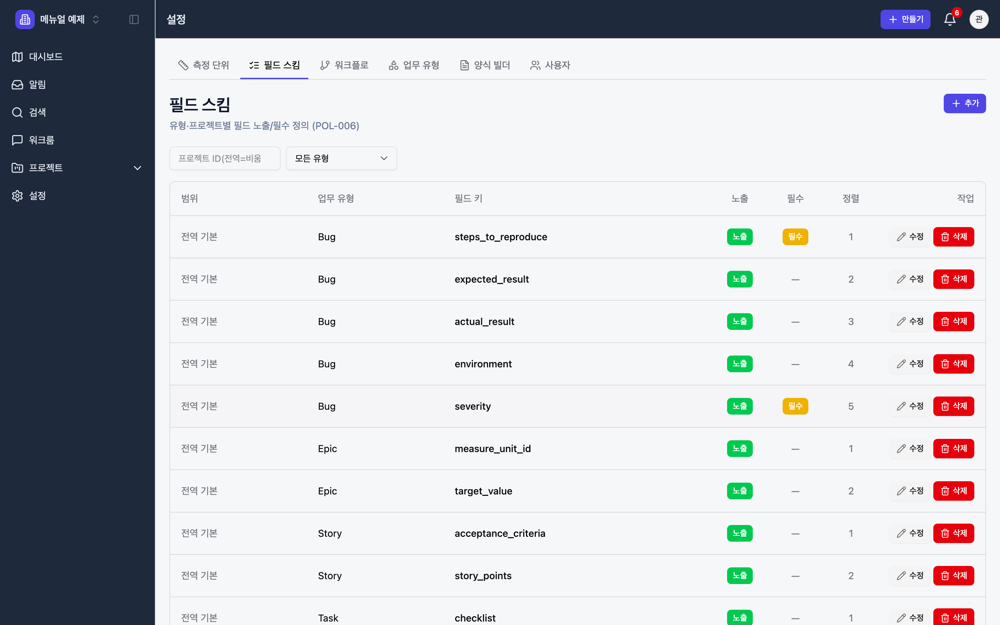
12전체 화면 인덱스
화면 → 진입 경로 → 핵심 기능 한눈에.
| 화면 | 진입 경로 | 핵심 |
|---|---|---|
| 로그인 | /login | 이메일·비밀번호, 비번 찾기 |
| 워크스페이스 선택 | 로그인 직후 | WS 선택·생성 |
| 회사 홈 | LNB 대시보드 | 전사 지표·현황 |
| 받은함 | LNB 알림 | 배정·멘션·알림 |
| 검색 | LNB 검색 | 통합 검색·퀵필터·저장필터 |
| 워크룸 | LNB 워크룸 | 채널·메시지·스레드·리액션 |
| 프로젝트 목록 | LNB 프로젝트 | 카드·필터·생성 마법사 |
| 요약 | 프로젝트 → 요약 | 지표·진행률·멤버 |
| 보드 | 프로젝트 → 보드 | 칸반·드래그 상태전이 |
| 백로그 | 프로젝트 → 백로그 | 스프린트·드래그 정리 |
| 목록 | 프로젝트 → 목록 | 표·일괄 편집 |
| 타임라인 | 프로젝트 → 타임라인 | 기간 막대(로드맵) |
| 캘린더 | 프로젝트 → 캘린더 | 기한 월별·빈칸 생성 |
| 승인 | 프로젝트 → 승인 | 결재(운영형) |
| 보고서 | 프로젝트 → 보고서 | 분포·번다운·벨로시티 |
| 업무 상세 | 업무 클릭 | 본문·세부·댓글·이력 |
| 만들기 모달 | 헤더 [+ 만들기] | 업무 생성 |
| 개인 설정 | 계정 아바타 메뉴 | 알림·테마·비밀번호 |
| 관리자 | LNB 설정 | 측정·필드·워크플로·유형·양식·사용자 |